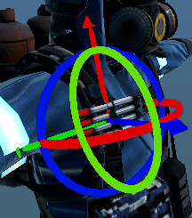

Module: common_editor
Documentation last edited: October 22, 2025 at 10:46 UTC
Description

A module for common editor development tools. For the time being it has:
- Gizmos that are used by both
comics_renderer
and
character_builder
modules
- Properties UI usable for material editing or other potential purposes
Adding gizmos support to your editor
- Instance the following scenes in your editor scene:
"res://modules/common_editor/assets/prefabs/position.tscn"
"res://modules/common_editor/assets/prefabs/rotation.tscn"
Then, in your main editor script (i assume it's assigned to the root node):
Steal and forget
# Rotation gizmo node that appears when you can rotate something
onready var rotation_gizmo = $rotation
# Position gizmo node that shows up when you can reposition something
onready var position_gizmo = $position
# Array of all selected hitbodies
var selected =
[]
# This variable is used for more precise check of currently selected body.
# It might not actually store a current one, so you'd better use selected
[0]
var selected_body = null
# Is user selecting something right now? Used for selection fix
var is_selecting = false
# Amount of frames in which user haven't selected anything yet
# Used for selection fix
var nothing_selected_frames = 0
# Force selection of certain object. phys_body must have a hit_body script
# referred to it
func force_selection(phys_body):
select_node_process(phys_body, true)
# Returns a ray dictionary of raycast check. It is sending a ray under cursor.
func get_camera_ray():
var camera = MainCamera.get_camera()
if not is_instance_valid(camera):
return null
var mouse_pos = get_viewport().get_mouse_position()
var from = camera.project_ray_origin(mouse_pos)
var to = from + camera.project_ray_normal(mouse_pos) * 100.0
var space_state = get_world().get_direct_space_state()
var ray = space_state.intersect_ray(from, to)
return ray
# Additional selection check to fix selection inconsistency.
# Always checking if there's any object under cursor, and if there's one
# it is resetting nothing_selected_frames and is setting selected_body.
# Called every physics frame.
func check_node_selection_ray():
var ray = get_camera_ray()
if not ray:
nothing_selected_frames += 1
return
if not ray.collider:
nothing_selected_frames += 1
return
nothing_selected_frames = 0
selected_body = ray.collider
# I've stolen that shit from Comics Renderer and now i'm not even sure what
# the fuck it does here. Alright, it used to do some generic selection
# logic here, but it was replaced by that fucked up selection fix i've made.
# It is still used in one case when nothing_selected_frames counter is above 10.
# I don't know why, and i don't want to know why, and i'm not gonna change it.
func select_node(unselect_previous = true):
var ray = get_camera_ray()
if not ray:
selected.clear()
position_gizmo.reset_selection()
rotation_gizmo.reset_selection()
return
if not ray.collider:
return
select_node_process(ray.collider, unselect_previous)
# Processes selection logic of the target body, used by selection fix instead of select_node.
# Checks for both HIT_BODY of "CommonEditorBody" used by gizmos.
func select_node_process(body, unselect_previous = true):
if not is_instance_valid(body):
return
var hit_body = \
HitBodyTool.get_node_property(body, "CommonEditorBody")
if hit_body:
select_hit_body(hit_body, unselect_previous)
# Select a hit_body, simple as that
func select_hit_body(hit_body, unselect_previous = true):
if hit_body.is_selected:
rotation_gizmo.remove_selected(hit_body)
position_gizmo.remove_selected(hit_body)
hit_body.unselect_node()
selected.erase(hit_body)
return
if unselect_previous and not hit_body.dont_deselect_others:
for select_body in selected:
select_body.unselect_node()
rotation_gizmo.reset_selection()
position_gizmo.reset_selection()
selected =
[]
if hit_body.can_be_rotated:
rotation_gizmo.add_selected(hit_body)
if hit_body.can_be_positioned:
position_gizmo.add_selected(hit_body)
hit_body.select_node()
selected.append(hit_body)
# Unselect a hit_body
func unselect_hit_body(hit_body):
if hit_body.is_selected:
position_gizmo.remove_selected(hit_body)
rotation_gizmo.remove_selected(hit_body)
hit_body.unselect_node()
selected.erase(hit_body)
# Input function, simply checks if user is selecting anything
func _input(event):
if event is InputEventMouseButton:
if in_UI:
return
if event.button_index == 1 and event.pressed:
is_selecting = true
# Physics frame update to check following things:
# - If nothing_selected_frames is greater than 10, there's no selected_body
# - If the user is selecting something, it'll run the selection logic
func _physics_process(delta):
if nothing_selected_frames >
10:
selected_body = null
check_node_selection_ray()
if is_selecting:
is_selecting = false
var keep = Input.is_key_pressed(KEY_SHIFT) or \
Input.is_key_pressed(KEY_CONTROL)
if nothing_selected_frames >
10:
select_node(not keep)
else:
select_node_process(selected_body, not keep)
All of this code should be enough to add support for gizmos in your main editor script, HOWEVER, you need to add this support to your fellow edited objects as well.
Common Editor HitBody support
# Reference to the hit body script used for selection and interaction
const HIT_BODY = preload(
"res://modules/common_editor/src/common_editor_hit_body.gd")
hit_body = HIT_BODY.new()
hit_body.real_node = self
hit_body.can_be_rotated = true
hit_body.can_be_positioned = true
hit_body.can_be_removed = true
var size = get_aabb().get_longest_axis_size()
hit_body.rotation_scale = size * 0.8
hit_body.position_scale = size * 0.8
HitBodyTool.add_node_property(static_body, HIT_BODY.OBJECT_NAME, hit_body)
AND this is not enough for your supported object to move around! If you want to make it move around, add this snippet:
# Handles rotation operations from input
# axis: Rotation axis vector
# value: Rotation amount
func on_rotate(axis: Vector3, value: float):
var og_axis = axis
var bone_rot = value * 0.005
if slow_edit:
bone_rot *= 0.2
rotate_object_local(axis, bone_rot)
rot_data.vec3 = rotation_degrees
# Handles position offset operations from input
# offset: Translation vector
func on_offset(offset: Vector3):
if slow_edit:
offset *= 0.1
global_transform.origin += offset
pos_data.vec3 = position
Common Editor's HitBody is calling the following methods in
real_node
:
on_select # Called on selection
on_unselect # Called when unselected
on_rotate # Called when rotated
on_rotate # Called on positional offset
It could've been simpler, but we love shooting our legs, right? :)
General Information
Root directories list
assets, docs, src
Nodes
vbox_fill_x
properties
editor_rotation_axis
material_property
editor_rotation
editor_position_axis
editor_position
Classes
common_editor_hit_body
CE_PropertiesData
Resources
None
Other Scripts
None